Overview
What this is
Battery-powered wireless sensors on the machine, an IIoT gateway with its own cellular uplink, and a self-hosted pipeline that turns every reading into a stored spectrum, a trend, and — when a threshold is crossed — an alert on somebody's phone.
It runs today on a live fleet at an operating cement plant — crushers, vane compressors, gearboxes, motors — streaming over 4G, and serves two organizations from one codebase.
This is the engineering half of the story: the decisions, the numbers, and the two outages that shaped the design. For the commercial overview, see the product brief.
The constraints that define the whole system
| Constraint | Consequence |
|---|---|
| The link is cellular, metered, shared by the whole site | Every byte is a design decision; a full reading costs ~1 MB, so it must be worth it |
| The plant network is off limits | Nothing plugs into it, and no port opens inbound anywhere — not at the plant, not at the platform |
| An analyst needs resolution, not a pretty chart | ~31 CPM where bearing faults live, with every stored point rendered |
| The site is unattended | An outage nobody is notified about lasts 19 hours — measured, not hypothetical |
01
System architecture

Three properties are worth naming, because everything else follows from them:
- The public plane contains exactly one service. The web app is reachable through a Cloudflare Tunnel; the broker, both databases, the ingester, Prometheus and Grafana stay on the private plane. The tunnel is outbound-only, so there is no inbound port to forward at either end of the link.
- Two stores, on purpose. Telemetry — high-rate, append-only, never updated — lives in InfluxDB 3. Relational state a human edits — organizations, users and roles, the equipment tree, bearing and RPM configuration, thresholds, alert lifecycle, audit trail — lives in PostgreSQL. Telemetry is never copied into Postgres, and app state never lands in InfluxDB.
- The app holds no state. No local database, no filesystem persistence, no session affinity — which is what makes the container runtime an implementation detail rather than a migration project.
02
Edge and transport
The hardware
The edge is CTC Connect equipment, and that choice carries the parts of the problem software cannot solve: an industrial-grade triaxial accelerometer that survives cement dust and years on a battery, and a certified radio that gets a 25,600-sample capture off a machine without a cable.
| Device | Class | Role in the pipeline |
|---|---|---|
| CTC WS300 | Triaxial dynamic | Full waveform + scalars per axis — the source of every spectrum shown here |
| CTC WS200 | Single-axis dynamic | Same dynamic path, one axis — and not always X |
| CTC WS100 | Process control | Hourly overall vibration with temperature and battery inline |
| CTC ACCESS360 | Gateway | BLE pairing and scheduled readings; publishes JSON over MQTT per channel |
The gateway ships its own device-local console — a React SPA over a FastAPI backend — and that console is where a sensor is paired, by BLE provisioning with the sensor physically present. Worth knowing if you ever automate against one: the MQTT API has no add/pair command, its publish topics operate on already-registered devices only, and it keeps two separate registries — dynamic and process — that must be queried independently. A configuration message aimed at a serial that is not a registered dynamic device is answered with a "device does not exist" reply that means "wrong class", not "unpaired". That distinction costs an hour the first time.
What is configurable over MQTT is the part that matters most here: reading cadence (6 h for dynamic sensors, 1 h for process) and sample count per capture. Raising the fleet to 25,600 samples is what put 0.51 Hz resolution within reach — and two sensors ignored the first configuration message and needed a retry, which is exactly why the ingester verifies the result in the next reading rather than assuming the write took.
The link, and the message model
The sensors speak BLE to a gateway that owns its own isolated LAN. The gateway's uplink is a cellular router that dials out and holds a VPN tunnel to the platform; MQTT rides inside that tunnel. Nothing is plugged into the plant's network and no firewall rule is requested — usually the difference between a two-week pilot and a two-quarter IT project.
| Channel class | Stored as | Notes |
|---|---|---|
| Full dynamic reading | vibration + vibration_fft | Scalar summary, plus computed spectrum, band features and waveform envelope |
| Lite dynamic reading | vibration | Compact summary between full readings |
| Process reading | vibration (data_type=process) | Overall scalars with temperature and battery inline |
| Battery / temperature / check-in / RSSI | sensor_health | One row per metric, tagged by metric |
| Connect / disconnect / config change | sensor_config | Typed columns plus a raw-JSON catch-all |
| Errors, status, gateway up/down, last-will, command responses | gateway_events | Tagged by event_type |
Every point carries gateway_sn and sensor_id tags. That single
decision is what makes the platform multi-gateway: new gateways and sensors are new tag
values, never new databases and never new dashboards. An earlier design used one
database per gateway; it was consolidated into a single tagged store and the per-gateway
databases were deleted.
Two message-level details that cost real debugging time: large readings arrive split across several MQTT messages and must be reassembled before parsing; and one channel nests its fields one level deeper than the others. A flat-only parser accepted that message, found no fields, and dropped it — silently. Two process sensors were invisible for weeks. Structured logging plus a per-channel message counter is what surfaced it, not a crash.
03
The FFT pipeline
This is the part that makes the product a diagnostic tool instead of a trend viewer.
Each dynamic sensor captures 25,600 samples per axis at ~13 kHz (~6.5 kHz usable bandwidth). That raw waveform already crosses the cellular link on every full reading, so the ingester computes the one-sided spectrum from it at no additional bandwidth cost — the alternative, asking the sensor for a spectrum, would pay for the same data twice.
Storing it is where it gets interesting. InfluxDB 3 rejects any single string field over 64 KB, and a full-resolution spectrum plus the raw waveform serializes to roughly 977 KB. The write fails with a 400 — but only partially: the small scalar row still lands, so the symptom is not "no data", it is "trends fine, spectra mysteriously absent". Worse, the 24-hour safety net keyed off the missing spectrum and kept re-triggering those sensors hourly, each retry pulling megabytes over 4G for nothing.

- Resolution goes where the diagnosis lives. Bearing fault frequencies and running-speed harmonics on 800–1,100 RPM machines sit below a few hundred Hz. Every native bin at or below 1 kHz is stored untouched — 0.51 Hz, or 31 CPM per bin. Only the band above is bucketed, with a peak-preserving max rather than an average, so a high-frequency defect tone still shows up.
- The stored frequency grid is deliberately non-uniform. The app plots
[frequency, magnitude]pairs instead of assuming constant spacing, which makes the whole scheme transparent to the chart. - The waveform is stored as a min/max envelope, oscilloscope-style: 2,000 points that keep the visual shape and the exact extremes, so the per-axis peak and peak-to-peak table stays numerically correct.
- Band features are computed before any reduction, at full resolution — the numbers an alarm fires on are never the downsampled ones.
An earlier version bucketed the whole spectrum uniformly to 2,000 bins and degraded a reading from its native 2.06 Hz to ~3.08 Hz per point (185 CPM). Adequate for a trend, useless for bearing analysis. The dual-band store is 6× finer in the band that matters and still fits inside the field limit at ~40 KB.
04
Bandwidth economics
On a metered cellular link, the data plan is a first-class design constraint.
| Quantity | Value |
|---|---|
| Full 3-axis reading (25,600 samples/axis) over 4G | ~1.03 MB |
| Fleet-wide, at the current cadence | ~17 MB/day |
| One dynamic sensor, full readings every 6 h | ~62 MB/mo ≈ $1.85 |
| Check-in / RSSI / battery messages | hundreds of bytes |
The ingester counts payload bytes per sensor and per channel as a Prometheus
counter, so fleet data consumption is a dashboard panel with a monthly projection and a cost
estimate, not a surprise on an invoice. Those panels use the cumulative counter rather than a
rate, because vibration messages are sporadic and large — a series that appears already at its
full value reads as ~0 under rate().
The same dashboard tracks the SIM plan against its limit. Not theoretical: a SIM hit its data cap, the carrier paused it, and the gateway went dark for 10 hours. There is now an alert at 80% of the plan and a one-click resume action that only ever touches SIMs in a paused state.
The next optimization — dropping the waveform from the continuous stream and fetching it on demand — would take the bill to cents per sensor per month, at the cost of the proactively stored spectra. A deliberate trade, not an oversight: today, every reading yields a spectrum whether anyone asked for one or not.
05
Durability: what a 19-hour outage taught
The database crash-looped for 19 hours and lost the telemetry that arrived during it. The post-mortem found one cause and two amplifiers, and all three are closed. It is the most useful section on this page.
The cause was a shutdown, not a power cut
InfluxDB needs ~19 seconds to stop cleanly — flush the write buffer, checkpoint the catalog,
close the WAL. Docker's default stop grace period is 10 seconds. So on
any host shutdown, including a perfectly clean one, the process is
SIGKILLed mid-write and leaves a zero-byte WAL file behind. Every
stateful container now declares an explicit stop_grace_period. A grace period is an
upper bound, not a delay — a container that exits in one second still exits in one second — so a
generous value costs nothing.
Amplifier one: the database could not restart
Replay skips an empty WAL segment ("file too small"), but the server then creates the next segment with create-if-not-exists semantics, collides with the empty file already holding that sequence number, and reads the collision as another process holding the node — aborting with a message about a node "still running in another process" that has nothing to do with the real failure. 3,940 restarts, each ~10 seconds, never binding its port. The documented remedy needs a live server over HTTP, and the process dies before it listens.
The fix is an entrypoint wrapper, not an init container: on every start it
quarantines zero-byte WAL files by renaming them out of the replay glob, then execs the real
entrypoint with the original arguments. The distinction matters — on host boot Docker reapplies
restart policies but never honours depends_on, so an init service would sit out
precisely the scenario it exists for. Verified by reproducing the failure on the live system:
empty WAL injected at the next sequence number, container started, file quarantined, server bound
in four seconds with zero restarts.
Amplifier two: the ingester had nowhere to put readings
The MQTT client acknowledges a QoS-1 message as soon as the handler returns, so a reading not persisted at that instant is gone — the broker will not redeliver it.

write() never raises; a failed batch is parked
on disk and replayed in order.write()never raises. A failed write parks the batch on disk instead of propagating an exception into the message handler.- Ordering survives. While a backlog exists, new batches queue behind it, and the drain stops at the first failure rather than reordering around a flapping server.
- A torn write is impossible. Batches are written to a temp file, fsynced, then atomically renamed — the very failure mode that started the incident is not reproducible in the fix.
- The spool is bounded. Past its cap the oldest batches are evicted. A long outage costs the oldest readings rather than the disk the database lives on; the host was at 86% during the incident, and an unbounded buffer would have been a worse failure than the one it prevents.
Verified end to end against the running stack: with the database stopped, live sensor traffic was parked on disk, a drain attempt during the outage replayed nothing and lost nothing, and on restart the backlog replayed automatically — readings the previous code would have dropped.
06
Observability, and three layers of alerting
The ingester exposes Prometheus metrics in three groups: service health (broker connected, messages and points, errors, last message per gateway), the durable write path (last write succeeded, batches and bytes on disk, points parked, points replayed, batches dropped — the last being real data loss), and fleet health (per-sensor last-seen, battery, RSSI), plus cellular plan metrics polled from the SIM provider's API.
Prometheus scrapes that endpoint — and the database directly, with a bearer token, because a metric derived from the ingester only moves when a write is attempted: during a quiet period the database can be dead while the gauge still reads healthy. Correct, but it pages nobody.
Everything is keyed by gateway_sn and sensor_id labels, so a new
device appears on the existing dashboard automatically. There are no per-device dashboards to
maintain.

- Rules live in exactly one place. They were moved to the alerting layer, not copied — two definitions of the same alert drift apart, and only one of them can page anyone.
- "No data" is a per-rule decision, not a default. Alert when absence is the failure (the database is unreachable; the ingester process is gone). Stay silent everywhere else, because absence is normal: a counter has no series until it first increments, and per-sensor gauges vanish across a restart until each sensor reports again. Left at the default, those rules page on every deploy.
- Two PromQL guards worth stealing. Dividing usage by a limit alerts forever
on devices with no configured limit unless you filter
limit > 0; andtime() - gaugeon a never-yet-set gauge is ~56 years, which fires on every restart unless you guard the zero. - The layer-2 probe watches one thing. Adding more services to its decision would duplicate layer 1 and page twice for one failure; what layer 1 structurally cannot report is that layer 1 is gone. It retries within a single run so one dropped packet is not an outage, and it keeps state in a ConfigMap it patches with a narrowly scoped ServiceAccount — otherwise a stateless CronJob either notifies on every run, turning a night-long outage into hundreds of messages, or never notifies twice.
- The heartbeat is unconditional. It asserts one thing: the watchdog ran and reached the internet. Tying it to service health would make a single failure page from two layers at once and leave silence meaning two different things.
One honest blind spot is left, and it is architectural: a rule built on in-memory gauges can only see sensors heard from since the last restart. A sensor that never reports after a restart has no series and cannot trigger anything. Catching that needs an expected-sensor inventory — relational state, and therefore Postgres, not a metrics store.
07
The web application
| Decision | Why |
|---|---|
| Next.js App Router + TypeScript | Telemetry is queried in Server Components and API routes only — database credentials never reach a client bundle |
| SQL over Flight SQL | Standard SQL against a columnar store; no niche query language in the codebase |
| Server-side downsampling | Responses capped at ~2,000 points, with one deliberate exception: FFT spectra ship up to 4,000 bins per axis, because that is the product |
| Apache ECharts, Canvas | Thousands of points per series render smoothly where SVG charting collapses; pixel sampling banned on diagnostic charts |
| Auth.js, RBAC, multi-tenant | Organization scoping and engineer/viewer separation from the first commit, not bolted on |
| Drizzle ORM + PostgreSQL | Migrations in version control; the equipment tree, thresholds and alert lifecycle are relational data and are modelled as such |
| Evaluator as a trigger | A 5-minute authenticated call into the app; all threshold logic runs in-process in the stateless app, so the same code path serves a container runtime or a Kubernetes CronJob |
What an engineer actually does with it: browse a fleet organised as site → group → assembly → asset → monitoring point, drill into a sensor, switch between trend / spectrum / waveform, set running speed and bearing geometry from a searchable catalog to get 1×, BPFO, BPFI, BSF and FTF markers drawn on the spectrum, toggle Hz/CPM and zoom bands, read per-axis RMS, peak, peak-to-peak, peak frequency and crest factor, configure warning/alarm/critical thresholds per indicator, work the alert lifecycle with an audit trail, and export a trend to CSV. On a phone, the same thing, in a drawer-based shell built for a plant floor.
Two details that only show up on a real fleet: available axes are derived from the data, because a single-axis sensor may report on any axis and hard-coding X produces confidently empty charts; and sensor status is tri-state — reporting, paired-but-silent, unpaired — because collapsing "silent" into "offline" hides the failure that actually matters.
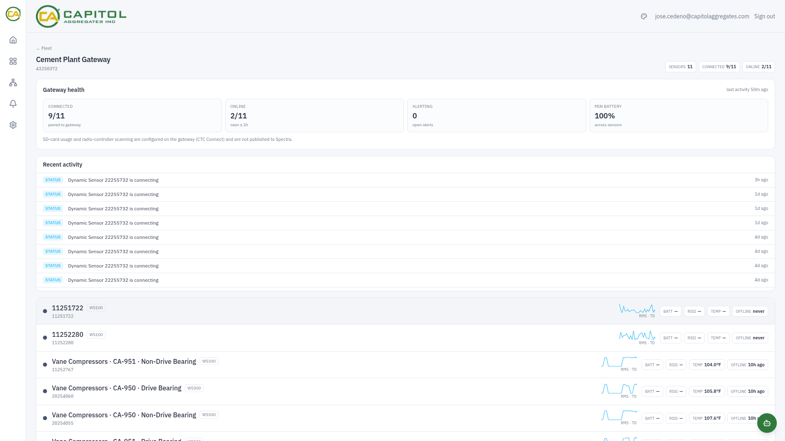
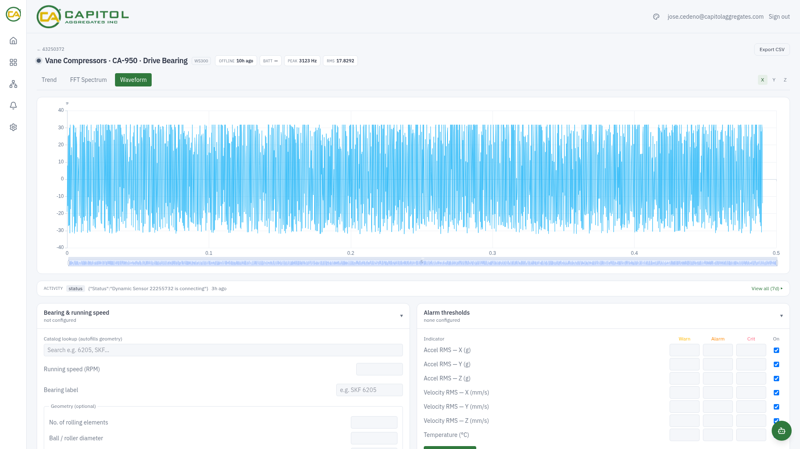
In-app assistant
The platform embeds a two-level assistant grounded in the project's own living documentation rather than general knowledge: it answers questions about the platform, the data model, configuration and operations, and can reach for live data through tools. The knowledge base is built from the repository's docs and committed as a snapshot, so answers move with the codebase instead of drifting away from it. The deeper level is gated behind a passphrase, and the assistant's name is part of each deployment's branding.
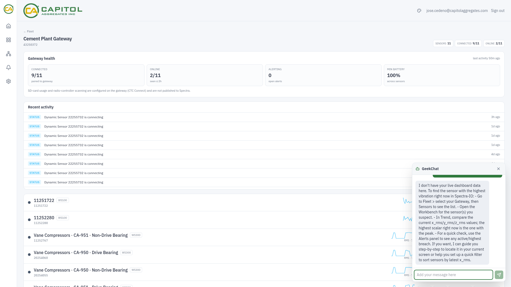
08
Multi-tenant and white-label
One codebase serves multiple branded deployments. Branding is centralized in a single module, sourced from build-time environment variables: name, tagline, logos, accent color (one hex re-skins all three themes), login hero, footer, assistant name, and the authentication method. Adding a brand needs no code change.
The separation axes are explicit: source code shared; branding, auth method, app-state database and runtime per deployment; telemetry shared read-only where deployments watch the same physical fleet, and split by pointing at a per-customer database where they do not. Improvements reach every deployment on the next rebuild.
One gotcha worth recording, because it costs an afternoon every time: once a tunnel is wired for a deployment, the auth library's canonical origin must be updated to the public hostname. It is a runtime variable, not a build argument, so the tunnel can be perfectly reachable while every login redirects the user back to an unreachable internal address.
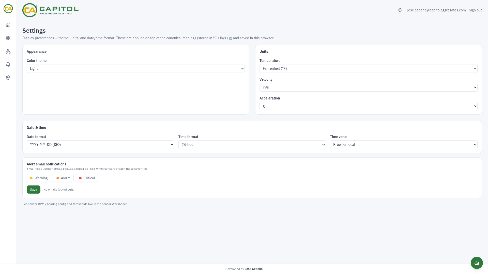
09
Deployment and runtime
The platform runs today as Docker containers on a single virtualized host: broker, ingester, time-series database, Prometheus, Grafana, and the branded web instances with their evaluator triggers. Relational state lives in a CloudNativePG cluster on Kubernetes, reached over the private network — the one component already where it will stay.
The production target is K3s for the stateless workloads, with manifests for the Postgres cluster and the evaluator CronJob already written. Two migration notes worth being honest about:
- The spool needs a small PVC, which pins the ingester to one node and blocks a second replica. Acceptable, because the ingester is already single-replica by design — it keeps per-sensor state in memory. If it is ever scaled out, the spool has to become a shared queue rather than a volume.
- The WAL guard should become unnecessary, not ported. It is a workaround for a single-node, local-filesystem deployment that lost power mid-write. An object store with atomic put semantics cannot leave a zero-byte segment. If the deployment keeps a local filesystem on a volume, the guard stays — and a Kubernetes init container is the right shape there, unlike Docker, because Kubernetes always runs init containers before the app container, including after a node reboot.
Exposure is through a Cloudflare Tunnel with no inbound ports at any layer; secrets are injected as environment variables and Kubernetes secrets, and none of them are in version control.
10
The platform
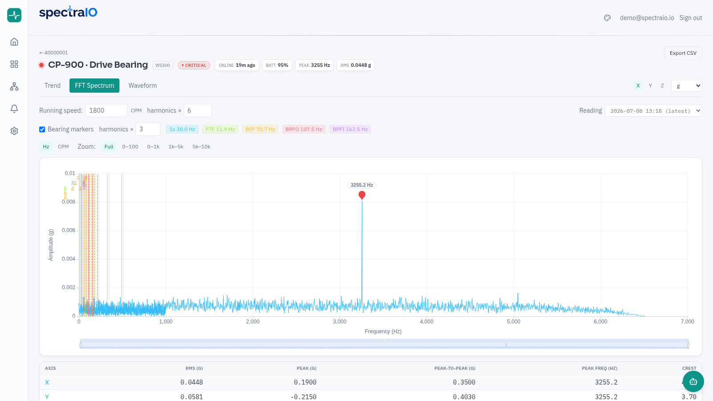
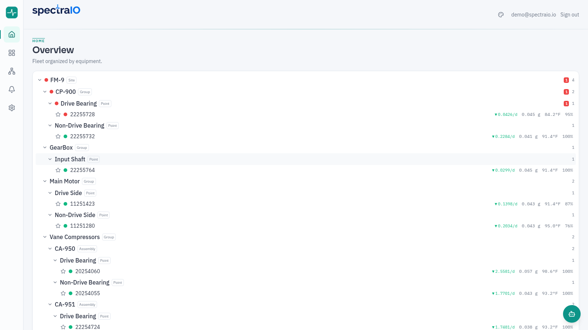
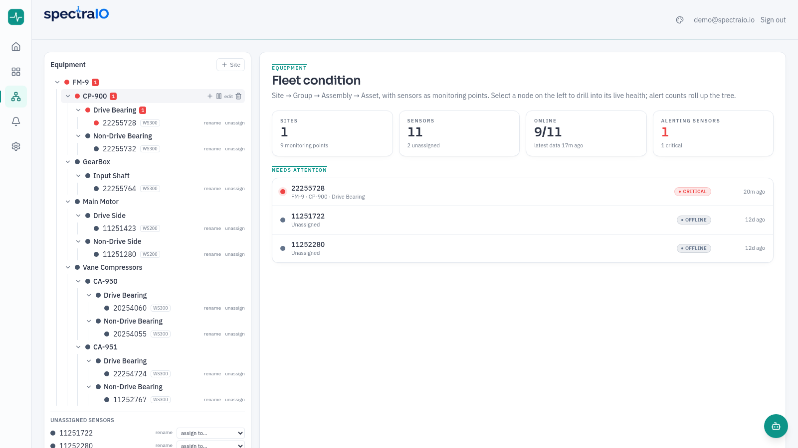
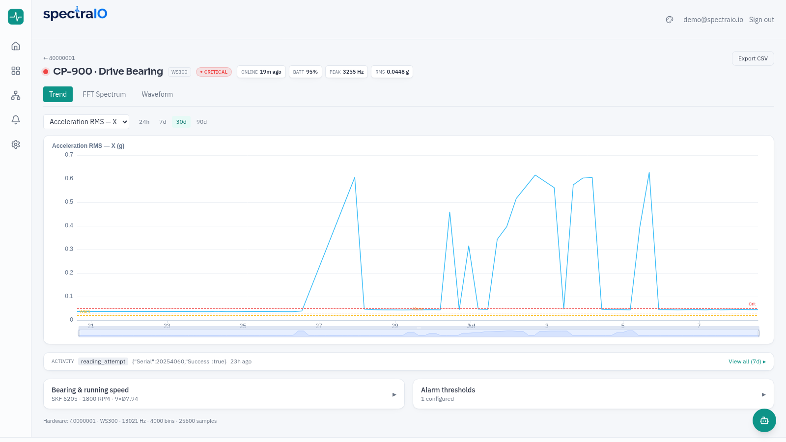
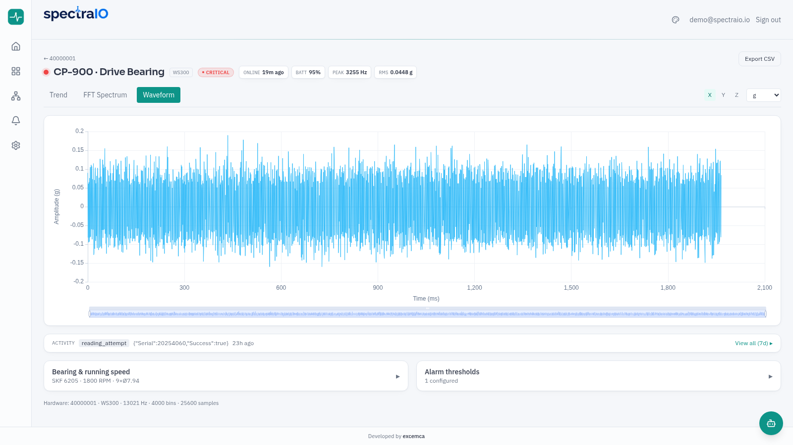
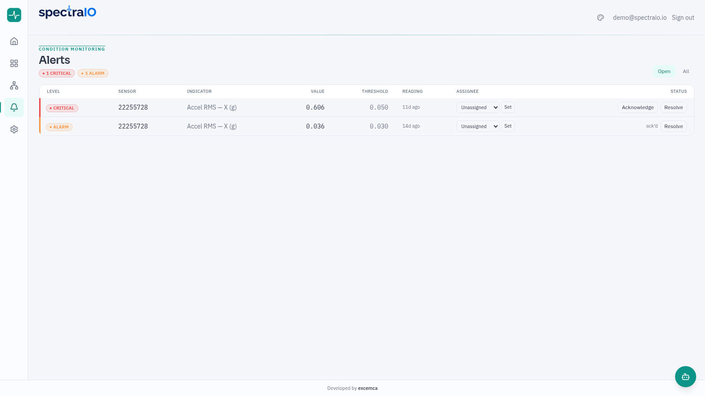
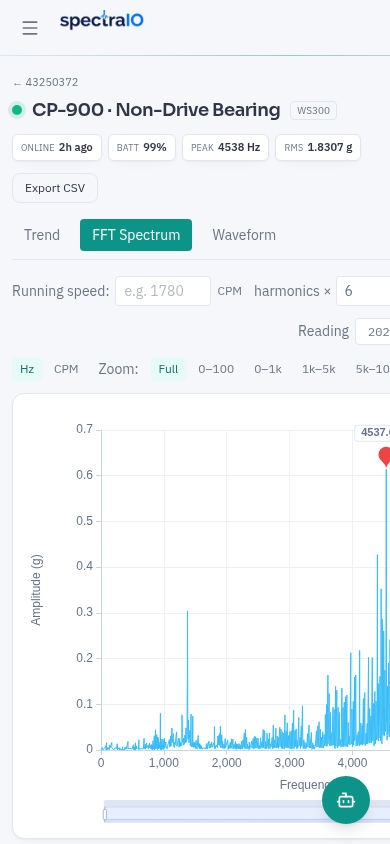
11
What's next
- On-demand high-resolution readings — force a spectrum between scheduled ones from the app, which also unlocks dropping the continuous waveform and taking the cellular bill to cents per sensor.
- Long-range radio for dispersed assets — the platform ingests standard MQTT, so LoRaWAN nodes covering well clusters and pump stations are a new radio, not a new system.
- Expected-sensor inventory in alerting — closing the one structural blind spot above by driving fleet-completeness alerts from the relational store.
- Migration of the stateless workloads to K3s, and the V1.0 decision on the telemetry sink.
Stack
Next.js · React · TypeScript ·
Apache ECharts (Canvas) · Tailwind CSS · Auth.js ·
Drizzle ORM · PostgreSQL / CloudNativePG ·
InfluxDB 3 (SQL over Flight SQL) · Python ·
HiveMQ (MQTT 5.0) · Prometheus · Grafana ·
Docker · K3s · Cloudflare Tunnel
Edge hardware: CTC Connect WS300 / WS200 / WS100 wireless sensors · CTC ACCESS360 gateway · cellular router with VPN client.